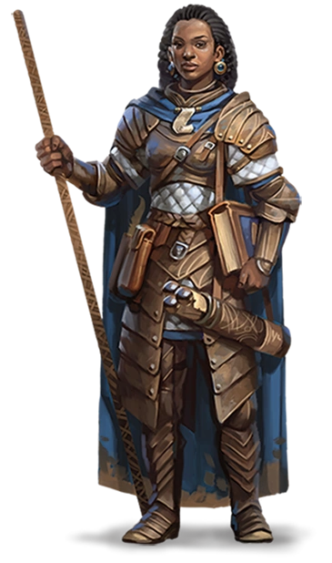

Os anões em Dungeons & Dragons são uma raça conhecida por sua tenacidade, força e vínculo profundo com a
terra.
Vivem em montanhas e cavernas, onde constroem impressionantes fortalezas e forjam itens de grande
qualidade.
São mestres artesãos e ferreiros, muito respeitados por suas habilidades em trabalhar com metais
preciosos e pedras.
Sua cultura é focada na honra, tradição e trabalho árduo.
Embora sejam fisicamente pequenos, os anões são incrivelmente resistentes, tanto em combate quanto na
vida cotidiana.
Eles possuem uma grande lealdade aos seus companheiros e à sua comunidade, valorizando a família e a
estabilidade acima de tudo.
Sua visão de mundo é lenta e meticulosa, e tendem a viver muito mais tempo do que os humanos,
o que lhes confere uma perspectiva longa e profunda sobre os acontecimentos do mundo.
Anão
TRAÇOS RACIAIS DOS ANÕES
Um personagem anão possui uma variedade de
habilidades inatas, parte integrante da natureza dos
anões.
Aumento no Valor de Habilidade: Seu valor de
Constituição aumenta em 2.
Idade: Anões tornam-se maduros na mesma
proporção que os humanos, mas são considerados jovens
até atingirem a idade de 50 anos. Em média, eles vivem
350 anos.
Tendência: A maioria dos anões é leal, pois acreditam
firmemente nos benefícios de uma sociedade bem
organizada. Eles tendem para o bem, com um forte senso
de honestidade e uma crença de que todos merecem
compartilhar os benefícios de uma ordem social justa.
Tamanho: Anões estão entre 1,20 e 1,50 metro de
altura e pesam cerca de 75 kg. Seu tamanho é Médio.
Deslocamento: Seu deslocamento base de caminhada
é de 7,5 metros. Seu deslocamento não é reduzido quando
estiver usando armadura pesada.
Visão no Escuro: Acostumado à vida subterrânea,
você tem uma visão superior no escuro e na penumbra.
Você enxerga na penumbra a até 18 metros como se fosse
luz plena, e no escuro como se fosse na penumbra. Você
não pode discernir cores no escuro, apenas tons de cinza.
Resiliência Anã: Você possui vantagem em testes de
resistência contra venenos e resistência contra dano de
veneno (explicado no capítulo 9).
Treinamento Anão em Combate: Você tem
proficiência com machados de batalha, machadinhas,
martelos leves e martelos de guerra.
Como um anão da colina, você tem sentidos aguçados,
maior intuição e notável resiliência. Os anões dourados de
Faerûn, que vivem em seu poderoso reino ao sul do
continente, são anões da colina, assim como os exilados
Neidar e os depreciáveis Klar de Krynn, no cenário de
Dragonlance.
Aumento no Valor de Habilidade: Seu valor de
Sabedoria aumenta em 1. Tenacidade Anã: Seu máximo de pontos de vida
aumentam em 1, e cada vez que o anão da colina sobe um
nível, ele recebe 1 ponto de vida adicional.
Como um anão da montanha, você é forte e resistente,
acostumados a uma vida difícil em terrenos difíceis. Você,
provavelmente tem a descendência daqueles mais altos
(para um anão) e tende a possuir uma coloração mais
clara. Os anões do escudo do norte de Faerûn, bem como o
clã governante Hylar e os clãs nobres Daewar de
Dragonlance, são anões da montanha.
Aumento no Valor de Habilidade: Seu valor de
Força aumenta em 2.
Treinamento Anão com Armaduras: Você adquire
proficiência em armaduras leves e médias.
ELFOS:
Os elfos em Dungeons & Dragons são uma das raças mais antigas e reverenciadas, conhecidos por sua grande longevidade, vivendo por séculos, e por sua conexão profunda com a magia e a natureza. Fisicamente, são mais altos e esbeltos do que os humanos, com orelhas pontudas e feições delicadas. Sua aparência etérea é complementada por uma visão aguçada, inclusive noturna, o que os torna excelentes caçadores e rastreadores. Além disso, possuem sentidos apurados e uma habilidade natural com arcos e magia.
Elfo
TRAÇOS RACIAIS DOS ELFOS
Seu elfo tem uma variedade de habilidades naturais,
resultado de milhares de anos de refinamento élfico. Aumento no Valor de Habilidade: Seu valor de
Destreza aumenta em 2.
Idade: Embora os elfos atinjam a maturidade física
com praticamente a mesma idade dos humanos, a
compreensão élfica da idade adulta vai além da
maturidade física, abrangendo sua experiência sobre o
mundo. Um elfo tipicamente assume a idade adulta e um
nome adulto com cerca de 100 anos de idade e pode viver
750 anos.
Tendência: Elfos amam a liberdade, a diversidade e a
expressão pessoal, então eles inclinam-se forte e
suavemente para aspectos do caos. Eles valorizam e
protegem a liberdade dos outros como a sua própria, e são
geralmente mais bondosos que o contrário. Os drow são
exceção. Seu exílio no Subterrâneo fez deles perversos e
perigosos. Drow são geralmente mais maus que o
contrário.
Tamanho: Elfos medem entre 1,50 a 1,80 metro de
altura e possuem constituição delgada. Seu tamanho é
Médio.
Deslocamento: Seu deslocamento base de caminhada
é 9 metros.
Visão no Escuro: Acostumado às florestas
crepusculares e ao céu noturno, você possui uma visão
superior em condições de escuridão e na penumbra. Você
pode enxergar na penumbra a até 18 metros como se fosse
na luz plena, e no escuro como se fosse na penumbra.
Você não pode discernir cores no escuro, apenas tons de
cinza.
Sentidos Aguçados: Você tem proficiência na perícia Percepção.
Ancestral Feérico. Você tem vantagem nos testes de
resistência para resistir a ser enfeitiçado e magias não
podem colocá-lo para dormir.
Transe: Elfos não precisam dormir. Ao invés disso,
eles meditam profundamente, permanecendo
semiconscientes, durante 4 horas por dia. (A palavra em
idioma comum para tal meditação é "transe".) Enquanto
medita, um elfo é capaz de sonhar de certo modo. Esses
sonhos na verdade são exercícios mentais que se tornam
reflexos através de anos de prática. Depois de descansar
dessa forma, você ganha os mesmos benefícios que um
humano depois de 8 horas de sono.
Idiomas: Você pode falar, ler e escrever Comum e
Élfico. O Élfico é um idioma fluido, com entonações sutis e
gramática complexa. A literatura élfica é rica e diversa, e
suas canções e poemas são famosos entre outras raças.
Muitos bardos aprendem essa língua para que possam
adicionar canções élficas ao seu repertório.
Sub-raça: Antigas divisões entre os povos élficos
resultaram em três sub-raças principais: os altos elfos, os
elfos da floresta, e os elfos negros, que são comumente
chamados de drow.
____________________________________________________________________________
ALTO ELFO
Como alto elfo, você possui uma mente afiada e um
domínio da magia básico. Em muitos dos mundos de
D&D, existem dois tipos de altos elfos. Um tipo (que
inclui os elfos cinzentos e elfos do vale de Greyhawk, os
Silvanesti de Dragonlance, e os elfos do sol dos
Reinos Esquecidos) são arrogantes e reclusos,
acreditando serem superiores aos não elfos e até
mesmo a outros elfos. O outro tipo (como os altos
elfos de Greyhawk, os Qualinesti de Dragonlance
e os elfos da lua dos Reinos Esquecidos) são
mais comuns e amigáveis, e muitas vezes
encontrados entre humanos e outras raças.
Os elfos do sol de Faerûn (também chamado de elfos
dourados ou elfos do amanhecer) têm pele bronzeada e
cabelos cor de cobre, negros ou louro dourado. Seus
olhos são dourados, prateados ou negros. Os elfos da
lua (também chamados de elfos de prata ou elfos
cinzentos) são muito mais pálidos, com pele de
alabastro por vezes tingida de azul. Normalmente, eles
têm cabelos de um branco prateado, negros ou azuis,
diversos tons de loiro, castanho e vermelho não são
incomuns. Seus olhos são azuis ou verdes com manchas
douradas.
Aumento no Valor de Habilidade. Seu valor de
Inteligência aumenta em 1.
Treinamento Élfico com Armas. Você possui
proficiência com espadas longas, espadas curtas, arcos
longos e arcos curtos.
Truque. Você conhece um truque, à sua escolha, da
lista de truques do mago. Inteligência é a habilidade
usado para conjurar este truque.
Idioma Adicional. Você pode falar, ler e escrever um
idioma adicional à sua escolha
Como um elfo da floresta, você possui sentidos e intuição
aguçados, seus pés ágeis guiam-no rápida e furtivamente
através de suas florestas nativas. Essa categoria inclui os
elfos selvagens (grugach) de Greyhawk e os Kagonesti de
Dragonlance, bem como as raças chamadas de elfos da
floresta em Greyhawk e nos Reinos Esquecidos. Em
Faerûn, os elfos da floresta (também chamados de elfos
selvagens, elfos verdes ou elfos do bosque) são reclusos e
desconfiados dos não elfos.
A pele dos elfos da floresta tende a ser de matiz
cobreada, algumas vezes com traços esverdeados. Seu
cabelo geralmente é castanho ou negro, mas
ocasionalmente podem ser loiros ou cor de cobre. Seus
olhos são verdes, castanhos ou cor de avelã.
Aumento no Valor de Habilidade. Seu valor de
Sabedoria aumenta em 1.
Treinamento Élfico com Armas. Você possui
proficiência com espadas longas, espadas curtas, arcos
longos e arcos curtos.
Pés Ligeiros. Seu deslocamento base de caminhada
aumenta para 10,5 metros.
Máscara da Natureza. Você pode tentar se esconder
mesmo quando você está apenas levemente obscurecido
por folhagem, chuva forte, neve caindo, névoa ou outro
fenômeno natural.
Descendentes de uma antiga sub-raça de elfos de pele
negra, os drow foram banidos da superfície do mundo por
seguirem a deusa Lolth pelo caminho do mal e corrupção.
Agora, eles construíram sua própria civilização nas
profundezas do Subterrâneo, moldados pelo Caminho de
Lolth. Também conhecidos como elfos negros, os drow
possuem pele negra similar a obsidiana polida e cabelos
brancos opacos ou amarelo pálido. Normalmente eles
possuem olhos muito pálidos (tão pálidos que são
confundidos com olhos brancos) com tons de lilás, prata,
rosa, vermelho e azul. Eles costumam ser menores e mais
magros que a maioria dos elfos.
Aventureiros drow são raros e a raça não existe em
todo o mundo. Verifique com seu Mestre se a raça drow
está disponível como personagem de jogador.
Aumento no Valor de Habilidade. Seu valor de
Carisma aumenta em 1.
Visão no Escuro Superior. Sua visão no escuro tem
alcance de 36 metros de raio.
Sensibilidade à Luz Solar. Você possui
desvantagem nas jogadas de ataque e testes de Sabedoria
(Percepção) relacionados a visão quando você, o alvo do
seu ataque, ou qualquer coisa que você está tentando
perceber, esteja sob luz solar direta.
Magia Drow. Você possui o truque globos de luz.
Quando você alcança o 3° nível, você pode conjurar a
magia fogo das fadas. Quando você alcança o 5° nível,
você pode conjurar escuridão. Você precisa terminar um
descanso longo para poder conjurar as magias desse traço
novamente. Carisma é sua habilidade chave para
conjurar essas magias.
Treinamento Drow com Armas. Você possui
proficiência com rapieiras, espadas curtas e bestas de
mão.
HALFLINGS:
Os halflings em Dungeons & Dragons são uma raça pequena e ágil, geralmente com cerca de 90 cm a 1 metro de altura. Fisicamente, eles têm corpos compactos e robustos, com pele clara, cabelos castanhos ou loiros e olhos brilhantes. São conhecidos por sua natureza curiosa e otimista, possuindo uma grande coragem e lealdade a amigos e familiares. Embora gostem de viver em paz e simplicidade, eles são habilidosos em situações de furtividade e exploração, o que os torna excelentes ladinos ou aventureiros discretos. Halflings tendem a evitar grandes confrontos, mas são surpreendentemente resistentes quando precisam lutar.
Halfling
TRAÇOS RACIAIS DOS HALFLINGS
Seu halfling possui uma série de características em
comum com todos os outros halflings. Aumento no Valor de Habilidade: Seu valor de
Destreza aumenta em 2.
Idade: Um halfling atinge a idade adulta aos 20 anos
e pode chegar a 150 anos.
Tendência: A maioria dos halflings é leal e boa. Via
de regra, eles possuem um bom coração e são amáveis,
odeiam ver o sofrimento dos outros e não toleram a
opressão. Eles também são muito ordeiros e tradicionais,
fortemente apegados à sua comunidade e ao conforto de
suas antigas tradições.
Tamanho: Halflings medem cerca de 0,90 metro de
altura e pesam aproximadamente 20 kg. Seu tamanho é
Pequeno.
Deslocamento: Seu deslocamento base de caminhada
é 7,5 metros.
Sortudo: Quando você obtiver um 1 natural em uma
jogada de ataque, teste de habilidade ou teste de
resistência, você pode jogar de novo o dado e deve utilizar
o novo resultado.
Bravura: Você tem vantagem em testes de resistência
contra ficar amedrontado.
Agilidade Halfling: Você pode mover-se através do
espaço de qualquer criatura que for de um tamanho maior
que o seu.
Idiomas: Você pode falar, ler e escrever Comum e
Halfling. A linguagem Halfling não é secreta, mas os
halflings são relutantes em compartilhá-la com os outros.
Eles escrevem muito pouco, por isso eles não possuem
uma literatura rica. No entanto, sua tradição oral é muito
forte. Quase todos os halflings falam o idioma Comum
para conversar com as pessoas das terras que habitam, ou
através das quais eles estejam viajando.
Sub-raças: Os dois tipos principais de halflings, Pés-Leves e Robustos, são mais como famílias
bem próximas do que verdadeiras sub-raças. Escolha uma destas sub-raças.
____________________________________________________________________________
PÉS LEVES
Como um halfling pés-leves, você pode esconder-se
facilmente, mesmo usando apenas outras pessoas como
cobertura. Você geralmente é afável e se dá muito bem
com os outros. Nos Reinos Esquecidos, os halflings pésleves espalharam-se até os lugares mais distantes e
são a
variedade mais comum.
Pés-leves são mais propensos à vontade de viajar do
que os outros halflings, e muitas vezes vivem ao lado de
outras raças ou levam uma vida nômade. No mundo de
Greyhawk, estes halflings são chamados pés-peludos ou
companheiros altos.
Aumento no Valor de Habilidade. Seu valor de
Carisma aumenta em 1.
Furtividade Natural. Você pode tentar se esconder
mesmo quando possuir apenas a cobertura de uma
criatura que for no mínimo um tamanho maior que o seu.
Descendentes de uma antiga sub-raça de elfos de pele
negra, os drow foram banidos da superfície do mundo por
seguirem a deusa Lolth pelo caminho do mal e corrupção.
Agora, eles construíram sua própria civilização nas
profundezas do Subterrâneo, moldados pelo Caminho de
Lolth. Também conhecidos como elfos negros, os drow
possuem pele negra similar a obsidiana polida e cabelos
brancos opacos ou amarelo pálido. Normalmente eles
possuem olhos muito pálidos (tão pálidos que são
confundidos com olhos brancos) com tons de lilás, prata,
rosa, vermelho e azul. Eles costumam ser menores e mais
magros que a maioria dos elfos.
Aventureiros drow são raros e a raça não existe em
todo o mundo. Verifique com seu Mestre se a raça drow
está disponível como personagem de jogador.
Aumento no Valor de Habilidade. Seu valor de
Carisma aumenta em 1.
Visão no Escuro Superior. Sua visão no escuro tem
alcance de 36 metros de raio.
Sensibilidade à Luz Solar. Você possui
desvantagem nas jogadas de ataque e testes de Sabedoria
(Percepção) relacionados a visão quando você, o alvo do
seu ataque, ou qualquer coisa que você está tentando
perceber, esteja sob luz solar direta.
Magia Drow. Você possui o truque globos de luz.
Quando você alcança o 3° nível, você pode conjurar a
magia fogo das fadas. Quando você alcança o 5° nível,
você pode conjurar escuridão. Você precisa terminar um
descanso longo para poder conjurar as magias desse traço
novamente. Carisma é sua habilidade chave para
conjurar essas magias.
Treinamento Drow com Armas. Você possui
proficiência com rapieiras, espadas curtas e bestas de
mão.
HUMANOS:
Os humanos em Dungeons & Dragons são uma das raças mais versáteis e adaptáveis. Fisicamente, eles possuem uma grande variedade de características, com altura variando entre 1,50 m e 1,90 m e uma ampla gama de cores de pele, cabelo e olhos. Essa diversidade os torna muito flexíveis em relação à cultura, aparência e habilidades. Psicologicamente, os humanos são conhecidos por sua ambição, criatividade e desejo de explorar, aprender e se aprimorar. Eles são resilientes, adaptando-se facilmente a novas situações e desafios, o que os torna líderes, guerreiros, magos, aventureiros e qualquer outra coisa que decidam ser. Sua natureza dinâmica e a capacidade de se adaptar rapidamente a diferentes ambientes e culturas é uma das maiores forças dessa raça.

Humano
TRAÇOS RACIAIS DOS HUMANOS
É difícil fazer generalizações sobre os humanos, mas seu
humano possui as seguintes características.
Aumento no Valor de Habilidade: Todos os seus
valores de habilidade aumentam em 1.
Idade: Os humanos chegam à idade adulta no final da
adolescência e vivem menos de um século.
Tendência: Os humanos não possuem inclinação a
nenhuma tendência em especial. Os melhores e os piores
são encontrados entre eles.
Tamanho: Os humanos variam muito em altura e
peso, podem ter quase 1,50 metro ou mais de 1,80 metro.
Independentemente da sua posição entre esses valores, o
seu tamanho é Médio.
Deslocamento: Seu deslocamento base de caminhada
é 9 metros.
Idiomas: Você pode falar, ler e escrever Comum e
outro idioma adicional, à sua escolha. Os humanos
normalmente aprendem os idiomas dos povos que
convivem, incluindo dialetos obscuros. Eles gostam de
rechear seu discurso com palavras emprestadas de outras
línguas: xingamentos orcs, expressões musicais élficas,
frases militares anãs e outros.
DRACONATOS:
Os draconatos em Dungeons & Dragons são uma raça de humanoides com características de dragões. Fisicamente, possuem escamas, garras, caudas e cabeças com traços dracônicos, com cores variando conforme sua linhagem (como vermelho, azul ou dourado). Psicologicamente, são conhecidos por seu senso de honra, coragem e lealdade. Eles têm habilidades mágicas e um poderoso ataque de sopro elemental (fogo, gelo ou eletricidade). Embora valorizem força, também respeitam sabedoria e tradição, e sua conexão com dragões influencia sua cultura e comportamento.
Draconato
TRAÇOS RACIAIS DOS DRACONATOS
Sua herança dracônica se manifesta em vários traços que
você partilha com outros draconatos.
Aumento no Valor de Habilidade: Seu valor de
Força aumenta em 2 e seu valor de Carisma aumenta em
1.
Idade: Draconatos jovens crescem rapidamente. Eles
caminham horas após nascerem, adquirindo o tamanho e
desenvolvimento semelhante a de uma criança humana
de 10 anos com 3 anos de idade e alcançam a maturidade
aos 15. Eles costumam viver até os 80.
Tendência: Os draconatos tendem aos extremos,
realizando uma escolha consciente de um lado ou do outro
da guerra cósmica entre o bem e o mal (representada por
Bahamut e Tiamat, respectivamente). A maioria dos
draconatos é boa, mas os que vão para o lado de Tiamat
podem se tornar vilões terríveis.
Tamanho: Os draconatos são mais altos e mais
pesados que os humanos, geralmente possuindo mais de
1,80 metro e normalmente pesando mais de 125 kg. Seu
tamanho é Médio. Deslocamento: Seu deslocamento base de caminhada
é 9 metros.
Ancestral Dracônico: Você possui um ancestral
dracônico. Escolha um tipo de dragão da tabela Ancestral
Dracônico. Sua arma de sopro e resistência a dano são
determinadas pelo tipo de dragão, como mostrado na
tabela.
Arma de Sopro: Você pode usar uma ação para
exalar energia destrutiva. Seu ancestral dracônico
determina o tamanho, formado e tipo de dano que você
expele.
Quando você usa sua arma de sopro, cada criatura na
área exalada deve realizar um teste de resistência, o tipo
do teste é determinado pelo seu ancestral dracônico. A CD
do teste de resistência é 8 + seu modificador de
Constituição + seu bônus de proficiência. Uma criatura
sofre 2d6 de dano num fracasso e metade desse dano num
sucesso. O dano aumenta para 3d6 no 6° nível, 4d6 no 11°
nível e 5d6 no 16° nível.
Depois de usar sua arma de sopro, você não poderá
utilizá-la novamente até completar um descanso curto ou
longo.
Resistência a Dano: Você possui resistência ao tipo
de dano associado ao seu ancestral dracônico.
Idiomas: Você pode falar, ler e escrever Comum e
Dracônico. O idioma Dracônico é conhecido por ser uma
das mais antigas línguas e ainda é usado no estudo de
magia. A linguagem soa áspera para a maioria das
criaturas, incluindo várias consoantes e silabas firmes.
GNOMOS:
Os gnomos em Dungeons & Dragons são uma raça pequena, geralmente com cerca de 1 metro de altura. Fisicamente, eles têm corpos compactos, com pele clara e cabelos que podem variar em cores vibrantes. Seus olhos são grandes e expressivos, refletindo sua natureza curiosa. Psicologicamente, os gnomos são conhecidos por sua inteligência, criatividade e senso de humor. Eles têm uma grande afinidade com a magia e a engenharia, sendo habilidosos em invenções e truques arcanos. Apesar de sua estatura diminuta, os gnomos são extremamente engenhosos e têm uma grande curiosidade pelo mundo ao seu redor. São frequentemente pacíficos, mas também resilientes e astutos quando confrontados com desafios.
Gnomo
TRAÇOS RACIAIS DOS GNOMOS
Seu personagem gnomo possui certas características em
comum com todos os outros gnomos.
Aumento no Valor de Habilidade: Seu valor de
Inteligência aumenta em 2.
Idade: Gnomos amadurecem a mesma proporção que
os humanos e, a maioria, atinge a idade adulta por volta
dos 40 anos. Eles podem viver entre 350 e 500 anos.
Tendência: Os gnomos geralmente são bons. Os que
tendem para a ordem são sábios, engenheiros,
pesquisadores, escolásticos, investigadores ou inventores.
Os que tendem ao caos são menestréis, engenhoqueiros,
andarilhos ou joalheiros caprichosos. Gnomos são bons de
coração e, até mesmo os trapaceiros entre eles tendem a
ser mais brincalhões que perversos.
Tamanho: Os gnomos tem entre 0,90 e 1,20 metro e
seu peso médio é de 20 kg. Seu tamanho é Pequeno.
Deslocamento: Seu deslocamento base de caminhada
é 7,5 metros.
Visão no Escuro: Acostumado à vida subterrânea,
você tem uma visão superior no escuro e na penumbra.
Você enxerga na penumbra a até 18 metros como se fosse
luz plena, e no escuro como se fosse na penumbra. Você
não pode discernir cores no escuro, apenas tons de cinza.
Esperteza Gnômica: Você possui vantagem em todos
os testes de resistência de Inteligência, Sabedoria e
Carisma contra magia.
Idiomas: Você sabe falar, ler e escrever Comum e
Gnômico. A linguagem Gnômica, que usa o alfabeto Anão,
é conhecida por suas técnicas de dissertação e por seus
catálogos de conhecimento sobre o mundo natural.
Sub-raças: Duas sub-raças de gnomos são
encontradas ao redor dos mundos de D&D: os gnomos da
floresta e os gnomos das rochas. Escolha uma dessas sub-raças.
____________________________________________________________________________
GNOMO DA FLORESTA
Como um gnomo da floresta, você possui um traquejo
natural com ilusões e velocidade e furtividade naturais.
Nos mundos de D&D, gnomos da floresta são raros e
reservados. Eles vivem em comunidades escondidas em
florestas silvestres, usando suas ilusões e truques para se
esconderem das ameaças ou para mascarar sua fuga
antes de serem detectados. Gnomos da floresta tendem a
ser amigáveis com outros povos da floresta espirituosos e
eles tem nos elfos e fadas bondosas como seus mais
importantes aliados. Eles gnomos também fazem amizade
com pequenos animais silvestres e contam com eles para
obter informações sobre ameaças que estejam
perambulando por suas terras.
Aumento no Valor de Habilidade. Seu valor de
Destreza aumenta em 1.
Ilusionista Nato. Você conhece o truque ilusão
menor. Inteligência é a sua habilidade usada para
conjurá-la.
Falar com Bestas Pequenas. Através de sons e
gestos, você pode comunicar ideias simples para Bestas
pequenas ou menores. Gnomos da floresta amam os
animais e normalmente possuem esquilos, doninhas,
coelhos, toupeiras, pica-paus e outras criaturas como
amados animais de estimação.
pieiras, espadas curtas e bestas de
mão.Como um gnomo das rochas, você possui uma
inventividade e resistência naturais acima dos outros
gnomos. A maioria dos gnomos nos mundos de D&D são
gnomos das rochas, incluindo os gnomos engenhoqueiros
do cenário de Dragonlance.Aumento no Valor de Habilidade. Seu valor de
Constituição aumenta em 1.
Conhecimento de Artífice. Toda vez que você fizer
um teste de Inteligência (História) relacionado a itens
mágicos, objetos alquímicos ou mecanismos tecnológicos,
você pode adicionar o dobro do seu bônus de proficiência,
ao invés de qualquer bônus de proficiência que você
normalmente use.
Engenhoqueiro: Você possui proficiência com
ferramentas de artesão (ferramentas de engenhoqueiro).
Usando essas ferramentas, você pode gastar 1 hora e 10
po em materiais para construir um mecanismo Miúdo (CA
5, 1 pv). O mecanismo para de funcionar após 24 horas (a
não ser que você gaste 1 hora reparando-o para manter o
mecanismo funcionando), ou quando você usa sua ação
para desmantelá-lo; nesse momento, você pode recuperar
o material usado para criá-lo. Você pode ter até três
desses mecanismos ativos ao mesmo tempo.
Quando você criar um mecanismo, escolha uma das
seguintes opções:
Brinquedo Mecânico. Esse brinquedo é um animal,
monstro ou pessoa mecânica, como um sapo, rato,
pássaro, dragão ou soldado. Quando colocado no chão,
o brinquedo se move 1,5 metro pelo chão em cada um
dos seus turnos em uma direção aleatória. Ele faz
barulhos apropriados a criatura que ele representa.
Isqueiro Mecânico. O mecanismo produz uma
miniatura de chama, que você pode usar para
acender uma vela, tocha ou fogueira. Usar o
mecanismo requer sua ação.
Caixa de Música. Quando aberta, essa caixa de
música toca uma canção a um volume
moderado. A caixa para de tocar quando alcança
o fim da música ou quando é fechada.
MEIO-ELFO:
Os meio-elfos em Dungeons & Dragons são uma raça híbrida, descendente de elfos e humanos. Fisicamente, são de estatura média, com feições delicadas e orelhas levemente pontudas. Psicologicamente, são versáteis, carismáticos e adaptáveis, com facilidade para se relacionar com outras raças. Embora tenham uma vida mais longa que os humanos, não alcançam a longevidade dos elfos. Os meio-elfos combinam habilidades dos dois pais, sendo frequentemente habilidosos em magia, combate ou diplomacia.
Meio-Elfo
TRAÇOS RACIAIS DOS MEIO-ELFOS
Seu personagem meio-elfo possui algumas qualidades em
comum com os elfos e algumas são exclusivas dos meio-elfos.
Aumento no Valor de Habilidade: Seu valor de
Carisma aumenta em 2 e outros dois valores de
habilidade, à sua escolha, aumentam em 1.
Idade: Meio-elfos atingem a maturidade ao mesmo
tempo que os humanos atingem a idade adulta, por volta
dos 20 anos. Eles vivem muito mais que os humanos, no
entanto, raramente ultrapassam os 180 anos.
Tendência: Meio-elfos compartilham a veia
caótica da sua herança élfica. Eles valorizam tanto a
sua liberdade quanto sua expressão criativa, não
demonstrando qualquer apresso por líderes ou seguidores.
Eles se irritam com regras, ressentindo com exigências de
outros e, as vezes, se provam incertos, ou pelo menos,
imprevisíveis.
Tamanho: Meio-elfos tem aproximadamente a mesma
altura dos humanos, variando entre 1,50 metro e 1,80
metro. Seu tamanho é Médio.
Deslocamento. Seu deslocamento base de caminhada
é 9 metros.
Visão no Escuro: Graças ao seu sangue élfico, você
tem uma visão superior no escuro e na penumbra. Você
enxerga na penumbra a até 18 metros como se fosse luz
plena, e no escuro como se fosse na penumbra. Você não
pode discernir cores no escuro, apenas tons de cinza.
Ancestral Feérico. Você possui vantagem em testes
de resistência contra encantamento e magia não pode
colocar você pra dormir.
Versatilidade em Perícia: Você ganha proficiência
em duas perícias, à sua escolha.
Idiomas: Você sabe falar, ler e escrever Comum,
Élfico e um idioma adicional, à sua escolha.
MEIO-ORC:
Os meio-orcs em Dungeons & Dragons são uma raça híbrida de orcs e humanos. Fisicamente, são grandes, fortes e imponentes, com pele verde ou cinza e características faciais de orc, como dentes afiados. Psicologicamente, eles frequentemente enfrentam conflitos internos devido à sua herança, mas são conhecidos por sua força, coragem e determinação. Apesar de sua aparência intimidadora, muitos meio-orcs se destacam como guerreiros ou bárbaros, com grande resistência à dor e habilidade de recuperação.
Meio-Orc
TRAÇOS RACIAIS DOS MEIO-ORCS
Seu personagem meio-orc possui certas características
derivadas da sua ancestralidade orc.
Aumento no Valor de Habilidade: Seu valor de
Força aumenta em 2 e seu valor de Constituição
aumenta em 1.
Idade: Os meio-orcs amadurecem um pouco antes
dos humanos, atingindo a idade adulta aos 14 anos.
Eles envelhecem notavelmente mais rápido e, raramente,
vivem mais de 75 anos.
Tendência: Meio-orcs tem uma tendência inata ao
caos devido aos seus parentes orcs e não são fortemente
inclinados ao bem. Meio-orcs que cresceram entre orcs e
desejam viver e estão dispostos a passar sua vida entre
eles, tendem a ser malignos.
Tamanho: Meio-orcs são de certa forma maiores e
mais largos que os humanos, medindo entre 1,80 metro e
2,10 metros. Seu tamanho é Médio.
Deslocamento: Seu deslocamento base de caminhada
é 9 metros.
Visão no Escuro: Graças ao seu sangue orc, você tem
uma visão superior no escuro e na penumbra. Você
enxerga na penumbra a até 18 metros como se fosse luz
plena, e no escuro como se fosse na penumbra. Você não
pode discernir cores no escuro, apenas tons de cinza.
Ameaçador: Você adquire proficiência na perícia
Intimidação.
Resistência Implacável: Quando você é reduzido a
0 pontos de vida mas não é completamente morto, você
pode voltar para 1 ponto de vida. Você não pode usar essa
característica novamente até completar um descanso
longo.
Ataques Selvagens: Quando você atinge um ataque
crítico com uma arma corpo-a-corpo, você pode rolar um
dos dados de dano da arma mais uma vez e adicioná-lo ao
dano extra causado pelo acerto crítico.
Idiomas: Você sabe falar, ler e escrever Comum, Orc.
O Orc é um idioma ríspido, possuindo uma linguagem de
consoantes duras. Ele não possui alfabeto próprio, mas
usa o alfabeto Anão.
TIEFLING:
Os tieflings em Dungeons & Dragons são humanoides com ascendência infernal, possuindo características como pele em tons de vermelho, roxo ou cinza, chifres, cauda e olhos brilhantes sem pupilas. Psicologicamente, eles enfrentam preconceito devido à sua aparência demoníaca, o que os torna resilientes e muitas vezes carismáticos. Conhecidos por sua inteligência e habilidades mágicas, os tieflings têm um forte senso de individualidade e são frequentemente vistos como misteriosos.
Tiefling
TRAÇOS RACIAIS DOS TIEFLINGS
Os tieflings compartilham certos traços raciais como
resultado de sua descendência infernal.
Aumento no Valor de Habilidade. Seu valor de
Inteligência aumenta em 1 e seu valor de Carisma
aumenta em 2.Idade. Os tieflings amadurecem ao mesmo tempo que
os humanos, mas vivem alguns anos a mais.
Tendência. Tieflings não possuem uma tendência
inata ao mal, mas muitos acabam por abraçá-lo. Maligno
ou não, uma natureza independente inclina a maioria dos
tieflings ao alinhamento caótico.
Tamanho. Os tieflings possuem o mesmo tamanho e
compleição dos humanos. Seu tamanho é Médio.
Deslocamento. Seu deslocamento base de caminhada
é 9 metros.
Visão no Escuro. Graças a sua herança infernal, você
tem uma visão superior no escuro e na penumbra. Você
enxerga na penumbra a até 18 metros como se fosse luz
plena, e no escuro como se fosse na penumbra. Você não
pode discernir cores no escuro, apenas tons de cinza.
Resistência Infernal. Você possui resistência a dano
de fogo.
Legado Infernal. Você conhece o truque
taumaturgia. Quando você atingir o 3° nível, você poderá
conjurar a magia repreensão infernal como uma magia de
2° nível. Quando você atingir o 5° nível, você também
poderá conjurar a magia escuridão. Você precisa terminar
um descanso longo para poder usar as magias desse traço
novamente. Sua habilidade de conjuração para essas
magias é Carisma.
Idiomas. Você sabe falar, ler e escrever Comum e
Infernal.